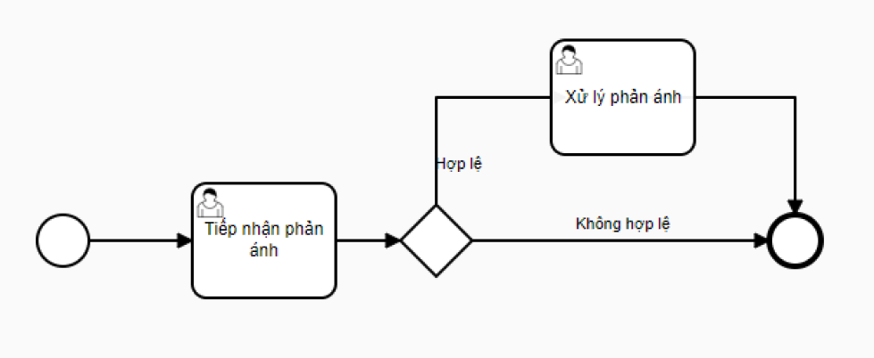

<div mat-dialog-title class="fw-500">
  Cập nhật quy trình
</div>

<div mat-dialog-content class="mt-1">
  <form [formGroup]="updateForm">
    <!-- Tiêu đề -->
    <mat-form-field appearance="outline" class="input-full-width">
      <mat-label> Tên quy trình </mat-label>
      <label>
        <input matInput formControlName="title" required>
      </label>
      <mat-error *ngIf="title.invalid"> {{ getErrorMessage(1) }} </mat-error>
    </mat-form-field>

    <!-- Chuyên mục phản ánh -->
    <mat-form-field appearance="outline" class="input-1-2-width">
      <mat-label> Chuyên mục phản ánh </mat-label>
      <mat-select multiple [formControl]="topics">
        <mat-option *ngFor="let topic of topicList" [value]="topic"> {{ topic }} </mat-option>
      </mat-select>
    </mat-form-field>

    <!-- Đơn vị phản ánh -->
    <mat-form-field appearance="outline" class="input-1-2-width ml-2">
      <mat-label> Đơn vị áp dụng </mat-label>
      <mat-select multiple [formControl]="agency">
        <mat-option *ngFor="let agen of agencyList" [value]="agen"> {{ agen }} </mat-option>
      </mat-select>
    </mat-form-field>

    <div class="container">
      
      <div class="align-right">
        <span>
          Nhập mã quy trình
          <mat-form-field appearance="outline" class="input-1-4-width mt-3">
            <mat-label> Chọn quy trình </mat-label>
            <mat-select multiple [formControl]="process">
              <mat-option *ngFor="let pro of processList" [value]="pro"> {{ pro }} </mat-option>
            </mat-select>
          </mat-form-field>
          hoặc
          <a (click)="openDialogDrawProcess()"> Vẽ quy trình </a>
        </span>
      </div>
    </div>
  </form>
</div>

<mat-dialog-actions align="center">
  <button mat-button class="btn-cancel" [mat-dialog-close]="true"> Đóng </button>
  <button mat-button class="btn-cancel"> Lưu và Áp dụng </button>
  <button mat-button class="btn-save"> Lưu lại </button>
</mat-dialog-actions>
